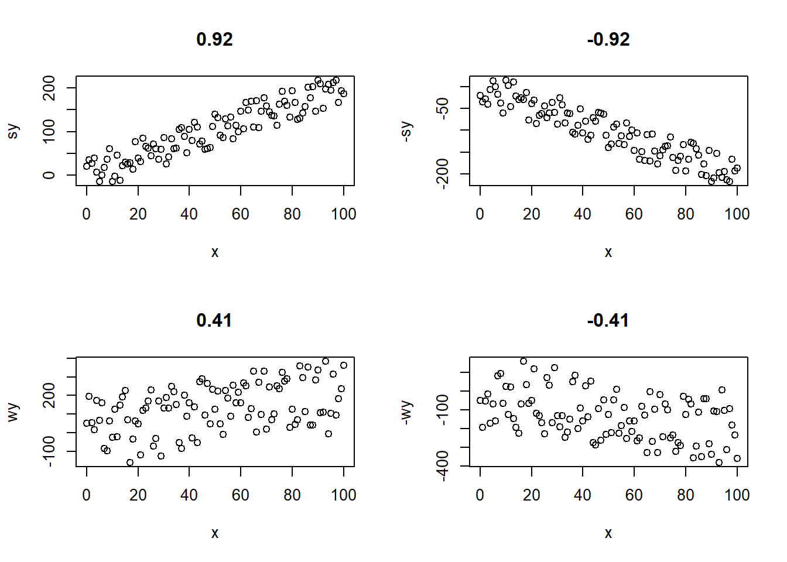
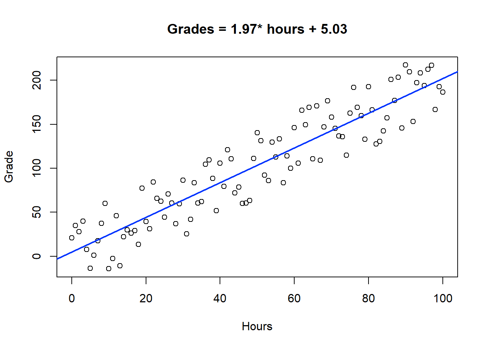

Seminar IV: Quantitative Analysis
T-test and Regression
- T-tests
- A t-test is used to determine whether or not there is a statistically significant difference in two means.
Certain assumptions are made for a t-test to be valid:
- Random samples - were the data collected as random samples that represent the larger population?
- Values are normally distributed - there is no indication the values are skewed in any way. (this is testable)
- Scores have the same variance – how far are the values spread from the average?
Interpretation of results:
Do you think that the means of these two groups are different? Yes, they are. Do you think they are ‘significantly’ different? To know that, we will need to do a t-test using the original data.| group | mean |
|---|---|
| Group A | 23.6 |
| Group B | 24.2 |
Your main focus in the results of the t-test is the p-value which represents “the probability of observing a sample statistic that is at least as extreme as your sample statistic when you assume that the null hypothesis is true.” Source
Take home: If you get a high p-value (over 0.05 usually), your results are consistent with the null hypothesis and you can say you ‘do not reject the null hypothesis.’ If, however, your results give you a low p-value (<0.05 typically), you should reject the null hypothesis in favor of the alternative hypothesis. These results indicate that there is an effect and a statistically significant difference in your observations.
So, p > 0.05, there is no difference; p < 0.05, there is a difference.
Consider the means above in the table. If the p-value from a t-test was 0.037, what would you conclude?
- Correlation
- This is a simple test to determine the extent to which two continuous variables are related. A value close to 1 suggests the relationship is approximately linear. A negative sign suggests that as one variable increases, the other decreases.

- Linear Regression
- This analysis generates a model that approximates your observed data. Essentially, you get a formula that can be used to predict values. There are other non-linear types of regression we will not cover. Be careful when modeling non-linear data! Sometimes scientists ‘correct’ non-linear data into a linear form to be able to model the data trend more easily. This is especially common with biological data.
Interpretation of results: You will hear talk of independent and dependent variables. In linear regression, the p-value for each of your independent variables “tests the null hypothesis that the variable has no correlation with the dependent variable.” Source
Example: You and your classmates study for an exam but you all study for different lengths of time. You find out that students that study more tend to get better grades. In this case your formula might look like GRADES = HOURS*X + k where k is some intercept. The variable HOURS is the independent variable and grades is the dependent variable. Your null hypothesis would state that ‘hours’ has no relationship with ‘grades’. If you get a low p-value, you would reject this idea and claim that the length of study time DOES have a relationship with student grades. The p-value in a regression works similarly to that in other tests but be careful how you interpret results.

##
## Call:
## lm(formula = sy ~ x)
##
## Residuals:
## Min 1Q Median 3Q Max
## -41.563 -19.981 0.469 20.345 38.645
##
## Coefficients:
## Estimate Std. Error t value Pr(>|t|)
## (Intercept) 5.03007 4.76156 1.056 0.293
## x 1.97103 0.08227 23.959 <2e-16 ***
## ---
## Signif. codes: 0 '***' 0.001 '**' 0.01 '*' 0.05 '.' 0.1 ' ' 1
##
## Residual standard error: 24.1 on 99 degrees of freedom
## Multiple R-squared: 0.8529, Adjusted R-squared: 0.8514
## F-statistic: 574 on 1 and 99 DF, p-value: < 2.2e-16What is our null hypothesis for this situation again? It is that study hours has no relationship with grades. What is the p-value for the independent variable ‘x’ (the study hours)? Can we reject the null hypothesis? What then can we conclude? Does this conclusion match up with the visual results we see in the plot?
Hands-on Analysis
This activity is set up for you to complete a t-test to compare means of two groups and to determine a function that can be used to predict data points using existing data values.
Please open RStudio Cloud and navigate to the materials for Seminar 4. We will work through these activities together.